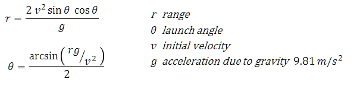
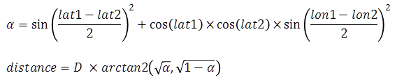

These exercises are designed to expand on the topics introduced in the Expressions chapter of the Java Development training course.
You can attempt the exercises in any order but the later exercises tend to be more complex and require more time to complete. You are not expected to complete all the exercises in the time available. Just do as many as you can do, or want to do, and try to find time after the course has finished to return to complete these exercises. If you are unsure what to do, or need advice as you work through the exercises then please ask your instructor for additional information.
The purpose of these exercises is to work with expression evaluation to understand operators, operands, precedence and data conversion; and to work with string methods and formatted strings.
Use two nested for loops to print out the classic children's times table so that it looks like:
1 2 3 4 5 6 7 8 9 10 11 12
1 1 2 3 4 5 6 7 8 9 10 11 12
2 2 4 6 8 10 12 14 16 18 20 22 24
3 3 6 9 12 15 18 21 24 27 30 33 36
...
12 12 24 36 48 60 72 84 96 108 120 132 144
Initially use the Sysytem.out.format() method to format each number separately in a field width of 4 characters. At the end of each row use Sysytem.out.println() to generate the end of line marker. You will need to use a separate for loop for the first (header) line.
Once you have your program working refactor it so that each row of numbers is appended to a StringBuilder object and Sysytem.out.println() is used to print the row: you will need to use String.format() to create the string to append to the string builder. Use a StringBuilder to build up the header line as well.
The path of projectiles such as a cannon ball (or an angry bird) when ignoring air resistance is given by several equations:
Write a program to calculate the launch angle theta when the range is 100m and the initial velocity 35 m/s. Remember to convert theta from radians to degrees when you print out the value (which should be 26.6 degrees). Now, feed your angle of theta (in radians) back into the range equation to verify the distance as 100m.
You will find the functions you need in the Math package, in particular you will need to use asin() (for arcsin), sin(), cos(), pow() (for power or exponent), toDegrees() and toRadians().
Generate a random integer between 1 and 9 (inclusive). Prompt the user to guess the number. If the user guesses correctly print out Good Guess otherwise print out whether their guess was lower or higher then the generated number. Finally print out the generated number.
Refactor (refine) your program to allow the user to guess again by looping round until the user guesses correctly or enters 0 to stop the program.
Write a program that reads a single integer from the user and then prints out if that number is prime.
A prime number is a number greater than one that cannot be exactly divided by any number other than itself and one. You can speed up your test by only considering the odd numbers up to 50% of the number you are testing. Do this in your solution by using a for loop to step through odd numbers from 3 up to half of the user's input number.
Refactor you solution to loop round reading integers from the user while they enter values greater than one.
The Haversine Formula is used to calculate the great circle distance between two points on a sphere. The formula is evaluated as follows where lat1, lon1 and lat2, lon2 represent the latitude and longitude of two points (defined as radians) and D is the diameter of the Earth:
Write a program that calculates the distance from Exeter (50.73, -3.54) to Heathrow (51.4775, -0.4614) expressed in km (Earth diameter is 12742km). You should get the result 222.06km. You will find all the functions you need in the Math package, and you will need to convert the latitude and longitude degrees to radians for use in the trigonometric functions.